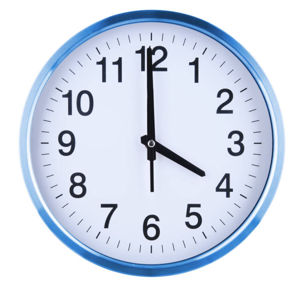

문제 9
아래에 표시된 문제를 해결하세요
단서1
- ABCDEFGHIJKLMNOPQRSTUVWXYZ
단서2(그림 참고)
위 단서를 활용해 다음의 암호를 해독하세요.
“XYVR SJJ PMKLX, PMKLX SR TETIV”정답은 따로 입력하지 않아도 됩니다.
위 암호를 해독하면 왜 그런지 자연히 알게 됩니다.
아래에 표시된 문제를 해결하세요
- ABCDEFGHIJKLMNOPQRSTUVWXYZ
위 단서를 활용해 다음의 암호를 해독하세요.
“XYVR SJJ PMKLX, PMKLX SR TETIV”정답은 따로 입력하지 않아도 됩니다.
위 암호를 해독하면 왜 그런지 자연히 알게 됩니다.